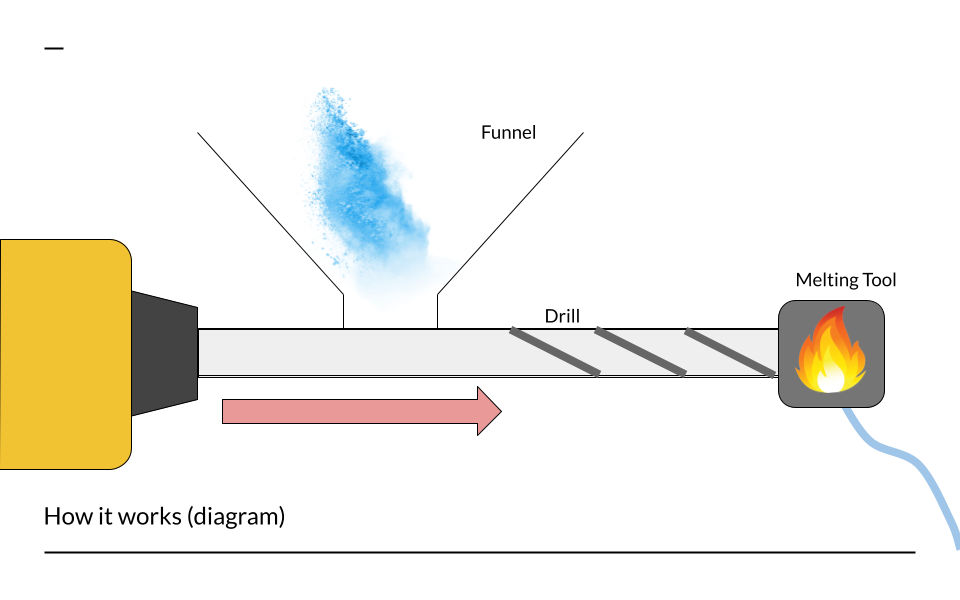

3D Printer and Filament Recycler
Built at MIT with Jason Huang, Nathan Shin, Will Morong
Filament waste is a big issue in 3D printing. Support material and failed prints lead to a huge amount of PLA filament thrown out in each print. During the 4-week MIT Beaverworks Summer Program, we spent the first 2 weeks building a 3D printer and the next 2 building our filament recycler.

In this project we used a high power drill as a motor and pushed plastic filament waste through a pipe and out of a smaller hole to create the filament. There was also a wrapper in the front connected to a step motor to wrap the filament around a spool. Due to time and budget limits we were unable to finsh the final product but our prototype is shown above
This is a drawing of what our final product should have looked like.